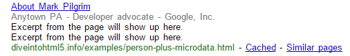

Разметка людей
Кстати, начальные примеры в предыдущем разделе не закончены полностью. Мы включили словарь микроданных для разметки информации о людях и это было просто. Давайте завершим начатое.
Самый простой способ интеграции микроданных с личным веб-сайтом — включить микроданные в страницу «Обо мне». У вас есть страница «Обо мне», не так ли? Если нет, то вы можете воспользоваться этим расширенным примером страницы с дополнительной семантикой. Финальный результат здесь.
Давайте посмотрим на исходную разметку перед добавлением каких-либо свойств микроданных.
<section>
<img width="204" height="250"
src="http://diveintohtml5.info/examples/2000_05_mark.jpg"
alt="[Марк Пилгрим, около 2000]">
<h1>Контактная информация</h1>
<dl>
<dt>Имя</dt>
<dd>Марк Пилгрим</dd>
<dt>Должность</dt>
<dd>Разработчик в Google, Inc.</dd>
<dt>Почтовый адрес</dt>
<dd>
100 Main Street<br>
Anytown, PA 19999<br>
USA
</dd>
</dl>
<h1>Мои цифровые отпечатки</h1>
<ul>
<li><a href="http://diveintomark.org/">блог</a></li>
<li><a href="http://www.google.com/profiles/pilgrim">профиль Google</a></li>
<li><a href="http://www.reddit.com/user/MarkPilgrim">профиль Reddit.com</a></li>
<li><a href="http://www.twitter.com/diveintomark">Twitter</a></li>
</ul>
</section>Первое, что вам всегда нужно сделать, это объявить используемый словарь и область свойств, которые вы хотите добавить. Это можно сделать путём включения атрибутов Itemtype и itemscope для внешнего элемента содержащего другие элементы, в которых хранятся фактические данные. В нашем случае это элемент <section>.
<section itemscope itemtype="http://data-vocabulary.org/Person">Теперь вы можете начать определение свойств микроданных словаря http://data-vocabulary.org/Person. Но что это за свойства? Как обычно, список свойств вы можете просмотреть путём перехода по адресу data-vocabulary.org/Person в вашем браузере. Спецификация микроданных не требует этого, но я бы сказал что это, безусловно, «хорошее решение». В конце концов, если вы хотите разработать актуальный словарь микроданных, необходимо его документировать. А где лучше разместить документацию, как не по адресу самого словаря?
| Свойство | Описание |
|---|---|
| name | Имя. |
| nickname | Псевдоним. |
| photo | Ссылка на изображение. |
| title | Звание (например: финансовый менеджер). |
| role | Роль (например: бухгалтер). |
| url | Ссылка на веб-страницу вроде персонального сайта. |
| affilation | Название организации с которой связан человек (например, как сотрудник). |
| friend | Определяет социальные связи между этим и другим человеком. |
| contact | Определяет социальные связи между этим и другим человеком. |
| acquaintance | Определяет социальные связи между этим и другим человеком. |
| address | Местоположение. Может содержать подсвойства: street-address, locality, region, postal-code и country-name. |
Первая вещь в данном примере страницы «обо мне» это моё изображение. Естественно, оно верстается с помощью элемента <img>. Всё, что нужно сделать для объявления того, что этот элемент <img> выступает моей фотографией в профиле, так это добавить itemprop="photo" в <img>.
Где находятся значения свойств микроданных? Они уже здесь, в атрибуте src. Если вы помните из модели микроданных HTML5, «значением» элемента <img> является атрибут src. Каждый элемент <img> содержит атрибут src — в противном случае мы бы просто получили битое изображение — и src это всегда URL. Видите? Если вы используете HTML правильно, с микроданными всё просто.
Кроме того, этот элемент <img> не один на странице. Он является дочерним элементом <section>, который мы только что связали с атрибутом itemscope. Микроданные повторно используют отношения элементов родитель-потомок на странице, чтобы определить область видимости свойств микроданных. Говоря простым языком: «Этот элемент <section> представляет собой человека. Любые свойства микроданных вы можете найти в дочерних элементах <section>, которые являются характеристиками этого человека». Если это поможет, вы можете подумать об элементе <section> как о фразе. Атрибут itemprop представляет собой глагол, что-то вроде «изобразить как» Значение свойства микроданных представляет собой сказуемое.
Этот человек [явно, из <section itemscope itemtype="...">]
изображён на [явно, из <img itemprop="photo">]
http://diveintohtml5.info/examples/2000_05_mark.jpg [неявно, из атрибута <img src>]
Подлежащее должно быть определено сразу, путём добавления атрибутов itemscope и itemtype в обрамляющий элемент <section>.Глагол определяется добавлением атрибута itemprop="photo" в <img>. Сказуемое в предложении не требует специальной разметки, потому что модель микроданных HTML5 говорит о том, что значением свойства элемента <img> является атрибут src.
Переходя к следующему блоку разметки, мы видим заголовок <h1> и начало списка <dl>. Ни <h1>, ни <dl> не нуждаются в микроданных. Не каждый фрагмент HTML должен выступать свойством микроданных. Микроданные сами должны говорить о себе, а не разметка или заголовки окружающих свойств делают это. <h1> не является таким свойством, это просто заголовок. Кроме того, <dt>, который говорит «Имя», не является свойством, это просто название.
Скучно
<h1>Контактная информация</h1>
<dl>
<dt>Имя</dt>
<dd>Марк Пилгрим</dd>Так где же настоящая информация? Она находится в элементе <dd>, так что мы должны поставить здесь атрибут itemprop. Какое из свойств? Свойство name. Где находится значение свойства? В тексте элемента <dd>. Значит ли это, что надо сделать разметку? Модель микроданных HTML5 говорит нет, элементы <dd> не имеют специальной обработки, поэтому значение свойства это только текст внутри элемента.
Это моё имя
<dd itemprop="name">Марк Пилгрим</dd>Как это сказать человеческим языком? Имя этой персоны — Марк Пилгрим. Хорошо, поехали дальше.
Следующие два свойства немного сложнее. Вот разметка ещё до микроданных.
<dt>Должность</dt>
<dd>Разработчик в Google, Inc.</dd>Если вы посмотрите на определение словаря Person, то текст «Разработчик в Google, Inc» на самом деле включает в себя два свойства: название («Разработчик») и принадлежность («Google, Inc»). Как вы можете выразить это в микроданных? Если коротко, то никак. В микроданных нет способа разбить текст на отдельные свойства. Нельзя сказать «первые 18 символов этого текста являются одним свойством микроданных, а последние 12 символов ещё одним свойством».
Но не всё потеряно. Представьте, что вы хотите выделить текст «Разработчик» другим шрифтом, в отличие от текста «Google, Inc». CSS не может такого. Так что бы вы сделали? В первую очередь необходимо включить фрагмент текста в элемент вроде <span>, а затем применить разные правила CSS для каждого элемента <span>.
Эта техника также полезна для микроданных. Есть два разных фрагмента информации: title и affiliation. Если обернуть каждую часть в фиктивный элемент <span>, то можно заявить, что каждый <span> это отдельное свойство микроданных.
<dt>Должность</dt>
<dd><span itemprop="title">Разработчик</span> в
<span itemprop="affiliation">Google, Inc.<span></dd>Та-да! «Этот человек называется Разработчик. Он работает в Google, Inc». Два предложения, два свойства микроданных. Немного лишней разметки, но оно того стоило.
Аналогичный приём используется для разметки адреса. Словарь Person определяет свойство address, которое само по себе является пунктом микроданных. Это означает, что адрес имеет свой собственный словарь (http://data-vocabulary.org/Address) и определяет собственные свойства. Словарь Address содержит пять свойств: street-address, locality, region, postal-code и country-name.
Если вы программист, то, вероятно, знакомы с нотацией для определения объектов и их свойств. Подумайте о взаимосвязи следующим образом:
- Person
- Person.address
- Person.address.street-address
- Person.address.locality
- Person.address.region
- Person.address.postal-code
- Person.address.country-name
В этом примере адрес содержится в одном элементе <dd>. Опять же, элемент <dt> просто название, так что он не играет никакой роли в добавлении семантики от микроданных. Описать свойство address легко. Просто добавьте атрибут itemprop к элементу <dd>.
<dt>Почтовый адрес</dt>
<dd itemprop="address">Но помните, что свойство address само по себе является пунктом микроданных. Это значит, что мы также должны добавить атрибуты itemscope и itemtype.
<dt>Почтовый адрес</dt>
<dd itemprop="address" itemscope
itemtype="http://data-vocabulary.org/Address">Мы видели всё это раньше, но только для элементов верхнего уровня. Элемент <section> содержит itemtype и itemscope, а все элементы внутри <section> определены свойствами микроданных с «областью действия» конкретного словаря. Но это первый раз когда мы видим вложенные области действия областей — добавление новых itemtype и itemscope (к элементу <dd>) к существующим (у элемента <section>). Эта вложенная область действия работает точно так же как HTML DOM. Элемент <dd> содержит определённое количество дочерних элементов, которые ограничены словарём, заданным для элемента <dd>. Как только элемент <dd> закрывается соответствующим тегом </dd>, область действия возвращается к словарю определённым родительским элементом (<section> в данном случае).
Свойства адреса страдают той же проблемой, с которой мы столкнулись со свойствами title и affiliation. У нас только один длинный текст, но мы хотим его разбить на пять отдельных свойств микроданных. Решение следующее: обернуть каждый отдельный фрагмент информации фиктивным элементом <span>, а затем объявить свойства микроданных для каждого <span>.
<dd itemprop="address" itemscope
itemtype="http://data-vocabulary.org/Address">
<span itemprop="street-address">100 Main Street</span><br>
<span itemprop="locality">Anytown</span>,
<span itemprop="region">PA</span>
<span itemprop="postal-code">19999</span>
<span itemprop="country-name">USA</span>
</dd>Простым языком: «Для этой персоны указан почтовый адрес. Улица — 100 Main Street, местность — Anytown, регион — PA, почтовый индекс — 19999, страна — USA». Реально просто.
Спроси профессора Разметкина
☞В. Формат почтового адреса специфичен для США?
О. Нет. Свойства словаря Address достаточно общие, поэтому они могут описать большинство почтовых адресов в мире. Не все адреса содержат значения для каждого свойства, но это нормально. Некоторые адреса могут потребовать более одной «строки» в одном из свойств, но это также нормально. К примеру, если ваш почтовый адрес содержит улицу и номер квартиры, они оба пойдут в street-address:
<p itemprop="address" itemscope
itemtype="http://data-vocabulary.org/Address">
<span itemprop="street-address">
100 Main Street
Suite 415
</span>
...
</p>Осталась ещё одна вещь на странице примера «Обо мне»: список URL. В словаре Person для этого есть свойство с именем url. Это свойство может быть любым, воистину (вообще-то, оно должно содержать URL, но вы об этом наверное уже догадались). Я имею в виду, что свойство url достаточно свободно. Это может быть URL любого типа, который вы хотите связать со словарём Person: блог, фотогалерея, профиль на сайте вроде Facebook или Twitter.
Другая важная вещь, о которой надо отметить, это то, что у каждой персоны может быть несколько свойств url. Технически, каждое свойство может быть добавлено несколько раз, но мы до сих пор не пользовались этим. Например, у вас может быть два свойства photo, каждое из которых указывает на свой URL изображения. Здесь я хочу перечислить четыре разных URL: мой блог, мой профиль на Google, мой профиль на Reddit и мой аккаунт Twitter. В HTML это список ссылок: четыре элемента <a>, каждый в своём элементе <li>. В микроданных каждый элемент <a> получает атрибут itemprop="url".
<h1>Мои цифровые отпечатки</h1>
<ul>
<li><a href="http://diveintomark.org/"
itemprop="url">блог</a></li>
<li><a href="http://www.google.com/profiles/pilgrim"
itemprop="url">профиль Google</a></li>
<li><a href="http://www.reddit.com/user/MarkPilgrim"
itemprop="url">Профиль Reddit.com</a></li>
<li><a href="http://www.twitter.com/diveintomark"
itemprop="url">Twitter</a></li>
</ul>В соответствии с моделью микроданных HTML5, элементы <a> имеют специальную обработку. Значением свойства является атрибут href, а не дочерний текст. Текст каждой ссылки микроданными фактически игнорируется. Таким образом, говоря простым языком: «У этой персоны есть URL http://diveintomark.org/. У этой персоны есть другой URL http://www.google.com/profiles/pilgrim. У этой персоны есть другой URL http://www.reddit.com/user/MarkPilgrim. У этой персоны есть другой URL http://www.twitter.com/diveintomark».
Представляем Google Rich Snippets
Я хочу сделать на мгновение шаг назад и спросить: «Зачем мы это делаем»? Неужели мы добавляем семантику только ради добавления семантики? Не поймите меня неправильно, мне очень нравится возиться с угловыми скобками, как заядлому вебоману. Но зачем эти микроданные? К чему нам эти беспокойства?
Есть два основных класса приложений где используется HTML и, соответственно, микроданные HTML5:
- браузеры;
- поисковые системы.
Для браузеров HTML5 определяет API DOM для извлечения элементов микроданных, свойств и их значений с веб-страницы. На момент написания статьи (февраль 2011) ни один браузер не поддерживает этот API. Ни один. Это своего рода тупик, по крайней мере, пока браузеры не наверстают упущенное и не реализуют API на стороне клиента.
Другим основным потребителем HTML являются поисковики. Что может сделать поисковик с микроданными о человеке? Только представьте: вместо простого отображения заголовка страницы и куска текста, поисковик может интегрировать некоторую структурную информацию и отобразить её. ФИО, должность, работодатель, адрес, может быть даже небольшая фотография из профиля. Привлекло бы это ваше внимание? Моё бы точно.
Google поддерживает микроданные как часть их программы Rich Snippets. Когда поисковый паук Google анализирует вашу страницу и находит свойства микроданных соответствующих словарю http://data-vocabulary.org/Person, он анализирует эти свойства и сохраняет их вместе с остальными данными страницы. Google даже предоставляет удобный инструмент для просмотра того, как поисковик «видит» ваши свойства микроданных. Тестирование пробной страницы с микроданными даёт следующий результат:
Person photo: http://diveintohtml5.info/examples/2000_05_mark.jpg name: Mark Pilgrim title: Developer advocate affiliation: Google, Inc. url: http://diveintomark.org/ url: http://www.google.com/profiles/pilgrim url: http://www.reddit.com/user/MarkPilgrim url: http://www.twitter.com/diveintomark address [Address]: street-address: 100 Main Street locality: Anytown region: PA postal-code: 19999 country-name: USA
Здесь есть всё: свойство photo из атрибута <img src>, все четыре адреса из списка атрибутов <a href>, есть даже объект address и все пять его свойств.
И как же Google использует всю эту информацию? Это зависит от многого. Нет жёстких правил о том, как показать свойства микроданных, отобразить все или какие-то определённые. Если кто-то ищет «Mark Pilgrim» и Google считает, что страница «About me» соответствует результату, а также решает, что свойства микроданных, обнаруженные на этой странице, стоит показать, то список результатов поиска может выглядеть как-то так:

Первая строка «About Mark Pilgrim» на самом деле является заголовком страницы, указанным в элементе <title>. Это не является чем-то страшно интересным, Google делает так для каждой страницы. Но вторая строка полна информации, взятой непосредственно из аннотации микроданных, которые добавлены на страницу. «Anytown PA» это часть почтового адреса, размеченного с помощью словаря http://data-vocabulary.org/Address. «Developer advocate» и «Google, Inc.» два свойства из словаря http://data-vocabulary.org/Person (должность и место работы, соответственно).
Это действительно весьма удивительно. Вам не нужно быть крупной корпорацией делающей специальные предложения разработчикам поисковиков для настройки своих результатов поиска. Потратьте десять минут и добавьте пару HTML-атрибутов для описания данных, которые и так уже были опубликованы.
Спроси профессора Разметкина
☞В. Я сделал всё, как вы сказали, но результат моей поисковой выдачи в Google не выглядит иначе. Что происходит?
О. «Google не гарантирует, что разметка на любой странице или сайте будет использоваться в результатах поиска». Но даже если Google решит не использовать ваши микроданные, это смогут другие поисковики. Как и всё остальное в HTML5, микроданные это открытый стандарт, доступный каждому. Это ваша работа — предоставить по возможности больше данных. Пусть остальной мир решает, что с ними делать. Вас может ждать сюрприз!

Все материалы сайта доступны по лицензии Creative Commons «Attribution-NonCommercial» («Атрибуция — Некоммерческое использование») 4.0 Всемирная, если не указано иное.